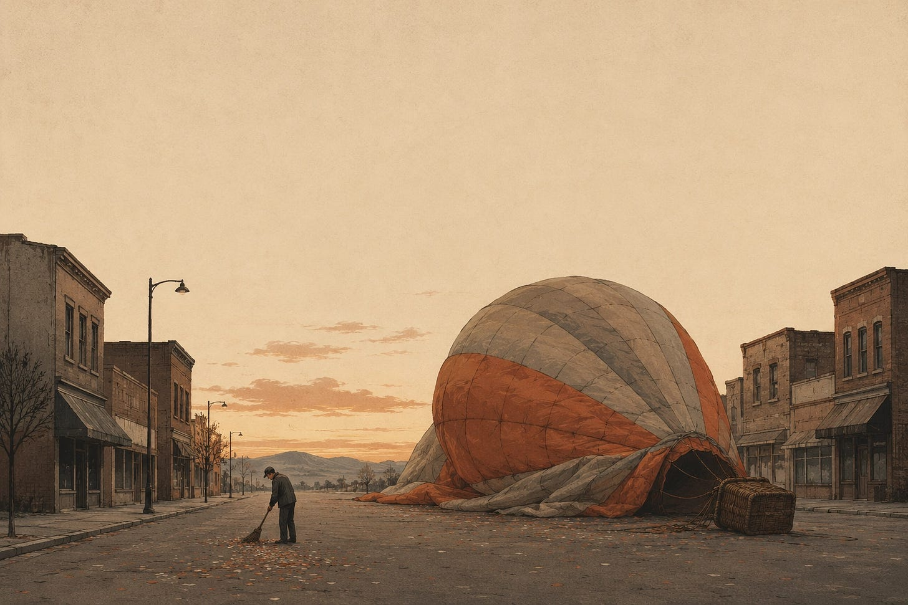
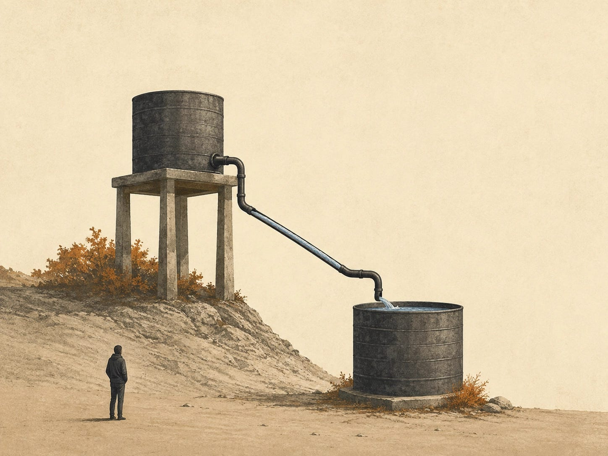
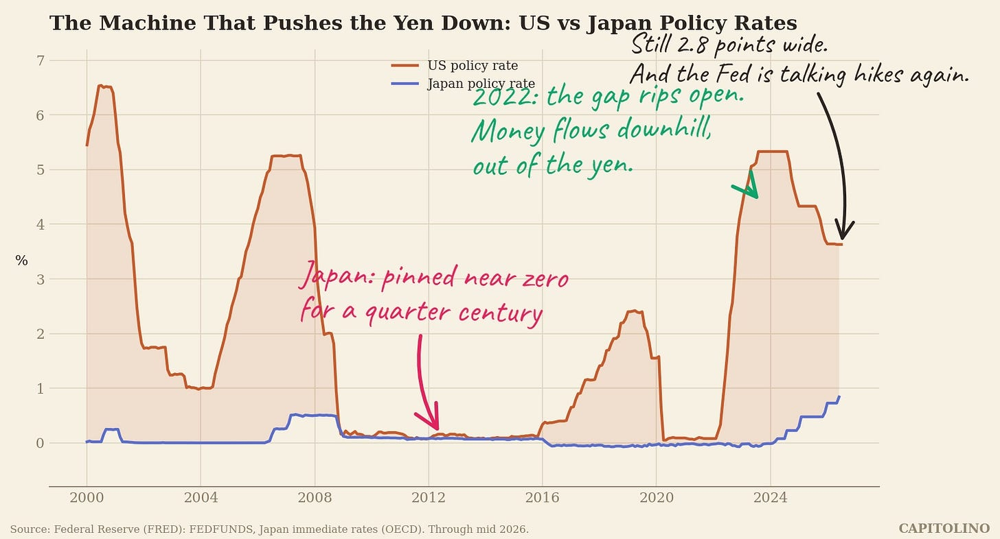
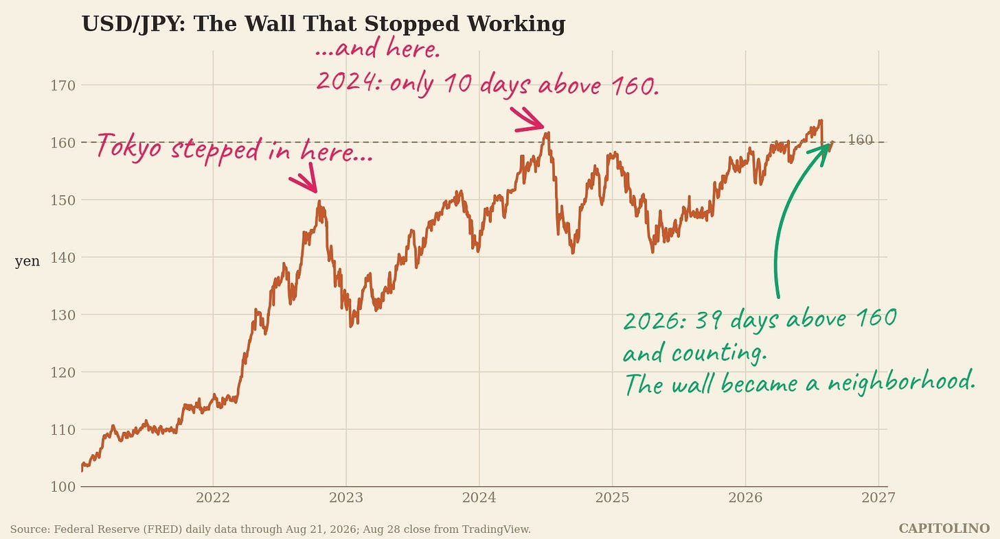

On July 31, the United States did something it had not done in more than a decade. It spent money to prop up another country’s currency. Treasury Secretary Scott Bessent confirmed it a few days later: America bought yen, alongside Japan, to stop the yen from falling.
Think about how strange that is. The country that prints the world’s money reached into its pocket to defend someone else’s.
To understand why, you need the whole story. It starts with a party that ended 35 years ago, runs through a central bank that got stuck at zero, and finishes in a place you might not expect: the US Treasury market. Here it is from the beginning.
Part 1: The party that ended
In the 1980s, Japan looked unstoppable. Japanese companies were buying Rockefeller Center and Hollywood studios. The old line was that the grounds of the Imperial Palace in Tokyo were worth more than all the real estate in California. Nobody thought that was crazy. That was the problem.
The bubble burst in 1990. Stocks lost more than half their value. Land prices fell for decades.
Here is what happens after a bubble that size. Everyone starts repaying debt at the same time. Companies stop borrowing. Families stop spending. With nobody spending, prices stop rising and start falling. That is deflation, and it is poison dressed as a discount. If you know your money buys more next year, why spend it this year? So everyone waits. Sales fall, wages fall, and everyone waits harder.
A central bank fights this with rate cuts, making money cheaper to borrow and less rewarding to hoard. The Bank of Japan cut and cut until, by 1999, its rate hit zero. And there it stayed. The lost decade became two, then three.

Part 2: Money flows downhill
To see how zero rates crushed the yen, think of a currency as a savings product. Hold dollars and you earn America’s interest rate. Hold yen and you earn Japan’s. When one account pays 5 percent and the other pays nothing, money moves. People sell yen to buy dollars, and the yen’s price falls. The interest rate gap is gravity for exchange rates.
Then it gets more aggressive. If borrowing yen costs nothing, why not borrow it, sell it, and park the money in something that pays? Investors around the world did exactly that, for decades, at enormous scale. The trade has a name, the carry trade, and the yen became its favorite fuel. Every one of those trades is a bet against the yen. Japan’s zero rates turned its own currency into the thing the world sells.

Part 3: The three arrows
In 2012, Shinzo Abe returned to power promising to end the stagnation with three arrows. The first arrow was the one that mattered: print without limit. The Bank of Japan began buying government bonds in massive quantities, flooding the economy with yen. Later it went further and pinned the 10 year bond yield near zero, promising to buy unlimited bonds to keep it there.
Here is the part people forget. The weak yen this produced was not a side effect. It was the point. A cheaper yen made Toyotas cheaper in America, reviving exports. It made imports pricier, nudging prices up and helping Japan escape deflation. The yen slid from around 80 per dollar to 120, Japanese stocks soared, and for a while it looked like the plan was working.
Part 4: The trap
The plan broke in 2022, and not because of anything Japan did.
America got inflation, and the Fed raised rates from zero to over 5 percent in about a year. By the textbook, Japan should have followed. Inflation had finally arrived there too, the very thing Japan had wanted for 30 years.
But the Bank of Japan could not chase. Three decades of money printing had built a trap. Government debt now exceeds twice the size of Japan’s economy, and that debt is only affordable because interest is nearly free. Raise rates meaningfully and the government’s interest bill explodes. Worse, the Bank of Japan itself owns roughly half of those bonds, so rising rates blow a hole in the central bank’s own balance sheet. The institution that spent decades pushing rates down can no longer afford for them to go up.
So Japan raised rates the only way it could: barely. Today the Fed sits at 3.6 percent and Japan sits below 1, and the Fed is talking about hiking again. The gravity never switched off.

Part 5: The wall breaks
What does a country do when its currency keeps sliding and it cannot use interest rates? It intervenes. The finance ministry sells dollars from its reserves and buys yen, by force.
Tokyo did this in 2022, spending record amounts. It did it again in 2024, when the yen crossed 160 per dollar. That defense worked for exactly 10 trading days above the line. But intervention is a painkiller, not a cure. The disease, the rate gap, remained. This year the yen has spent 39 days above 160 and counting. In late July it touched about 164, and by real purchasing power the yen fell to its weakest in 40 years.
An old safety valve is gone too. A cheap yen once fixed itself, because exports would boom and dollars would flow back in. But Japanese companies moved their factories abroad long ago, and these days Japanese households send dollars out for iPhones and cloud subscriptions. The currency fell, and the cavalry never came.

Part 6: America steps in
Which brings us to July 31, and the question of why Washington cared. Three reasons, in rising order of importance.
First, factories. The administration’s signature goal is bringing manufacturing back to America. A collapsing yen makes Japanese goods cheaper everywhere and pressures Korea, Taiwan, and China to let their currencies slide too. If all of Asia devalues, the math of building factories in Ohio stops working.
Second, the wiring. Decades of carry trades are cables running under every market. When the yen moves violently, they snap. August 2024 gave a preview: a small Japanese rate hike triggered a carry unwind that crashed stocks worldwide in days. Nobody in Washington wants the full version.
Third, and this is the quiet one: the Treasury market. Japan holds more than a trillion dollars of US government bonds, more than any other foreign country. If Tokyo had to defend the yen alone, it would need to sell those bonds to raise dollars. Heavy Japanese selling would push US long term yields, already at their highest since 2007, even higher. So Bessent is also pushing to expand a Fed facility that lets Japan borrow dollars against its Treasuries instead of selling them. The message could not be clearer: whatever you do, do not sell the bonds.
Helping Japan was never charity. It was America defending its own bond market, one step upstream.
Part 7: The two mirrors
At this point a fair question arises. The 30 year Treasury yield is rising, which many read as the market losing some faith in the dollar. Yet against the yen, the dollar is crushing it. So which is it? Is the dollar strong or weak?
Both. The dollar shows up in two different mirrors.
The first mirror is other currencies. Measured against the yen, the euro, the won, the dollar looks strong. But look closer and the reason is uncomfortable: it is not that the dollar is excellent, it is that the others are worse. Japan cannot raise rates at all. Europe has its own debts. In a room full of dirty shirts, the dollar is simply the least dirty one.
The second mirror is real things. Measured against gold, the dollar has been sinking for years; gold trades above 4,400 dollars an ounce. Measured against a fixed supply asset like bitcoin, same long arc. And the rising 30 year yield belongs in this mirror too: it is the fee investors now charge for trusting the dollar three decades out, in a country adding to a 40 trillion dollar debt.
So there is no contradiction. The yen’s collapse is a first mirror event: one currency losing to another. Rising long yields and record gold are second mirror events: all paper money, the dollar included, slowly losing ground to real things. The dollar can win every battle in the first mirror while losing the war in the second.
Part 8: The snake eats its tail
Now watch the whole loop run.
High US rates strengthen the dollar. The strong dollar breaks the yen. The broken yen pushes Japan toward selling US Treasuries. Treasury selling raises the US long yields that Washington most wants to keep down. So Washington steps in to help hold up the yen, spending credibility and money to protect its own bond market from its own interest rates.
Line up what the US Treasury did in a single month. It doubled its buybacks of its own long bonds. It bought yen alongside Japan. It pushed to expand the Fed’s dollar lending window so Japan never has to sell. Three moves, one mission: keep the long end of the Treasury market calm.
And that is the deepest lesson in this story. When you see this many fire trucks parked around one building, you learn something about the building. The more visibly governments manage their bond markets, the more the patient money drifts toward assets no government can print. Which is exactly what gold at record highs has been telling us all year.
What to watch from here: whether 160 holds, whether Treasury buybacks keep growing, and whether Japan’s holdings of US bonds start to shrink. The yen looks like Japan’s story. Follow the money to the end, and it arrives where every story arrives now: the price of trusting the dollar for 30 years.
The story of money. Every story of capital leads here.
Sources: Yen and rate data from the Federal Reserve (FRED), through August 2026. Joint intervention of July 31, 2026 confirmed by Treasury Secretary Bessent on August 3 (CNBC, Council on Foreign Relations). Japan Treasury holdings from US Treasury TIC data. Charts by Capitolino from FRED data.